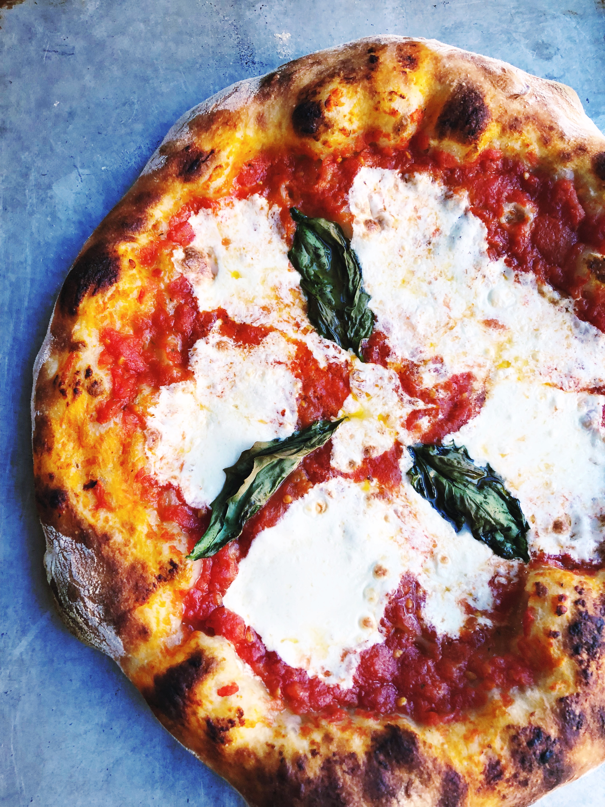

Pizza

Description
Pizza is one of the most important dishes of italian cousine.
Ingredients
- water, 700g
- instant dried yeast, 2g
- white flour, 1000g
- fine sea salt, 20g
- fresh mozzarella cheese, 1lb
- fresh basil
- fresh parmesan cheese
Steps
- In a small bowl, add 1/2 tsp. of yeast and 3 tablespoons of warm water. Set aside.
- In a very large bowl or 12-quart round tub, add the flour (7¾c.) and slowly add 3-4 cups
of warm water in, just until the mixture comes together.
- Mix by hand just until incorporated. Cover and let rest for 20 to 30 minutes on your
counter.
- Sprinkle the salt over the top of the dough. Then pour the yeast mixture over the dough.
Use a small piece of the mixture to wipe the remaining yeast goop from its container, then
throw it back in the tub.